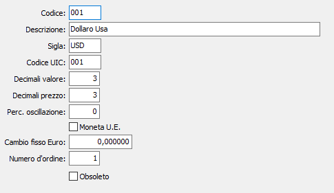

Divise
Le divise o valute estere sono necessarie a tutti gli utenti che intrattengono rapporti commerciali con l'estero e vengono utilizzate da varie procedure. I codici della divisa estera vengono memorizzati nelle anagrafiche clienti o fornitori o inseriti interattivamente ove se ne richiede la presenza.

CODICE: codice alfanumerico di 3 caratteri per individuare la divisa in esame. Su questo campo sono attive le funzioni di ricerca sulla tabella stessa.
DESCRIZIONE: campo alfanumerico di 50 caratteri per descrivere la divisa in esame.
SIGLA: campo alfanumerico di 5 caratteri per descrivere la sigla internazionale della divisa in esame.
CODICE UIC: È il codice di tre caratteri assegnato dall'ufficio italiano cambi, utilizzabile per i CVS (certificazione valutaria statistica).
DECIMALI VALORE: campo numerico per indicare il numero di decimali previsti per la registrazione di importi nella divisa in esame. Può assumere valori compresi fra 0 e 4.
DECIMALI PREZZO: campo numerico per indicare il numero di decimali previsti per i prezzi unitari nella divisa attiva, in caso di emissione di documenti in tale divisa. Può assumere valori compresi fra 0 e 6.
% OSCILLAZIONE: campo numerico di 3 interi e 2 decimali per indicare la percentuale massima accettabile di oscillazione del cambio della divisa in esame rispetto all’Euro. Inserendo nelle registrazioni un cambio che supera tale percentuale rispetto al cambio precedente presente in tabella cambi, il programma emette un messaggio di avvertimento.
FLAG MONETA U.E.: flag per definire l’appartenenza della divisa in esame all’area Euro.
CAMBIO FISSO EURO: campo numerico di 5 interi e 6 decimali per inserire, in caso di divisa appartenente all’area dell’Euro, il tasso fisso di conversione con l’Euro.
NUMERO D’ORDINE: campo numerico per definire, relativamente alle divise non appartenenti all’area dell’Euro, l’ordine di presentazione nella tabella Cambi Giornalieri. Per le divise area Euro, il campo deve contenere il valore “–1”.
OBSOLETO: flag attivabile dall’utente per inibire il possibile utilizzo dell’elemento di tabella in esame nelle successive transazioni.